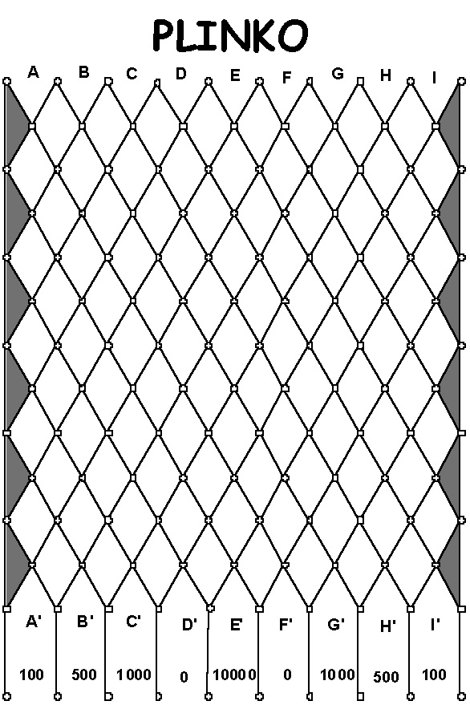

Plinko from the Price is Right¶
Another interesting game of chance is called Plinko, which has been used on the television game show “The Price is Right” for many years. This game is quite similar to a game called Quincunx, invented by the mathematician Sir Frances Galton (also called the Galton board).
Please see the following references for details about the game and Galton’s pioneering work:
Detailed Description of the original board
An Exercise for You to Try¶
After reading these references and any others that you can find, please attempt to build your own simulation of the Plinko game.
A sketch of the board from The Price is Right looks like this:
Image obtained from http://www.mathdemos.org/mathdemos/plinko/
Similar to previous examples, you should have a series of trial simulations, adding more and more disks to drop for each trial (on the Price is Right, contestants drop from one to five disks). You could start with five disks and double it for each trial. You will want to test what happens for each of the possible slots that they can initially drop the disk, labeled as A through I in the above diagram. The basic loop for simulating the trials would look like this:
while (numDisks < MAX) {
//drop numDisks thru each starting pos [A..I]
cout<<"\n\nDropping " << numDisks << " disks---\n";
for(pos='A'; pos<='I'; pos++) {
dropDisks(pos, numDisks, numBigMoney);
}//for-pos
//show totals for this run...
showResults(numDisks, numBigMoney);
//increase #disks for next run
numDisks+=numDisks;
}//while
The function called dropDisks would do the large task of trying each disk to see where it lands. The loop might look something like this:
//The workhorse loop
for (disk=0; disk<numDisks; disk++) {
double valu = dropOneDisk(pos); //how much did we win?
totalWon+=valu; //keep running total for pos
if (valu==BIG_MONEY) //was it the BIG MONEY?
numBigMoneyHits++;
}//for-disk
numBigMoney[index]=numBigMoneyHits; //tally bigMoney hits for pos
As with the other examples presented earlier, using OpenMP to parallelize this loop should be a fairly straightforward task. The complex task for you is to code the logic of the possible movement of the disks along each row and compute how often the disk landed in each slot.
Questions you could answer¶
Where should I put my disks at the top to maximize the return at the bottom?
- For each starting slot, what is the probability that you will hit the big money slot?
Match your experimental results with the theoretical probabilities.